從「看懂」到「摸懂」，學習才真的開始。
從「看懂」到「摸懂」，學習才真的開始。
昨天完成了第二梯次的 Day 1 ✨
課後回頭看照片，真的覺得既開心又感動。
看到大家一起討論、摸索、畫記，最後再一起對答案，這種「做中學」的過程真的很棒！
當初在規劃課程時，就希望大家不是只「看」或「聽」，而是一定要「動手」——
自己摸、自己找、自己畫。
徒手的部分，更是要手把手一起練。
因為我相信，這才是開啟正向學習循環的起點。💪
這次的工作坊互動非常熱絡，回饋也超真實。
有位執業多年的醫師跟我分享，這堂課讓她重新找回對傷科徒手的興趣——
因為那些一直「想懂但摸不清楚」的結構，這次終於能真實地觸摸到、搞清楚了，
也讓她對針傷的治療更有信心。
聽到這樣的回饋，我真的很感動。
因為這正是我想辦這堂課的初衷之一。
在中醫的世界裡，提到「傷科」，大家常想到的是「硬傷」或「關節鬆動」，
願意深入研究針傷與徒手技巧的醫師並不多。
有時病人也會跟我說：「我不知道原來還有會親自操作的中醫師耶！」😅
很多人以為傷科一定要用蠻力，
或是覺得解剖太難、太複雜，乾脆放棄。
但事實完全不是這樣。
除了針與藥，徒手操作也是中醫師強大的工具之一。
其實很多細緻柔和的手法，非常適合女醫師或體型較瘦的醫師來操作。
感謝每一位願意真誠參與、真心學習的醫師，
讓我更確信這個工作坊的意義。
希望這堂課能讓更多中醫師重新發現「雙手」的力量，讓理論真的落實在手中，透過這雙手能幫助更多人👐
#表面解剖觸診與徒手入門工作坊
#第四屆已額滿
#第五屆報名開放中
👉 https://forms.gle/haN8j4x6LVFFoP6j6
中醫師 黃彥鈞
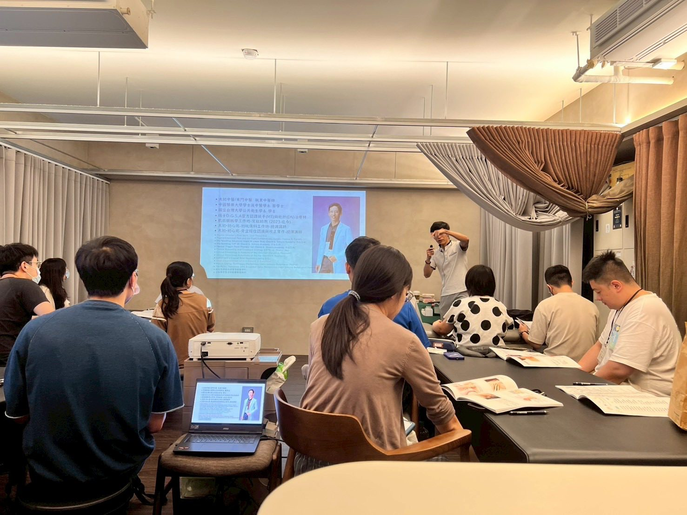
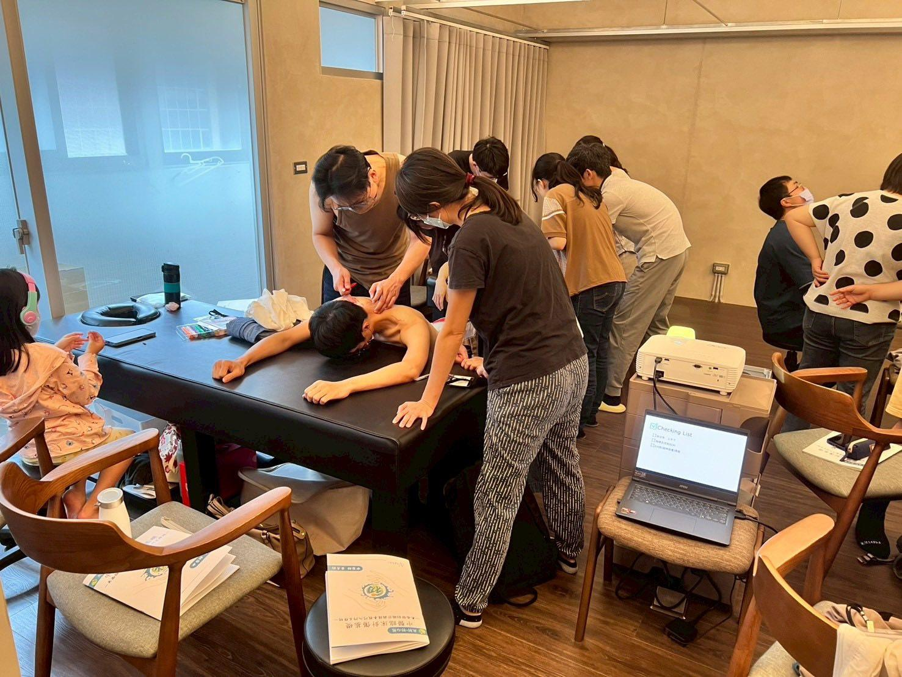
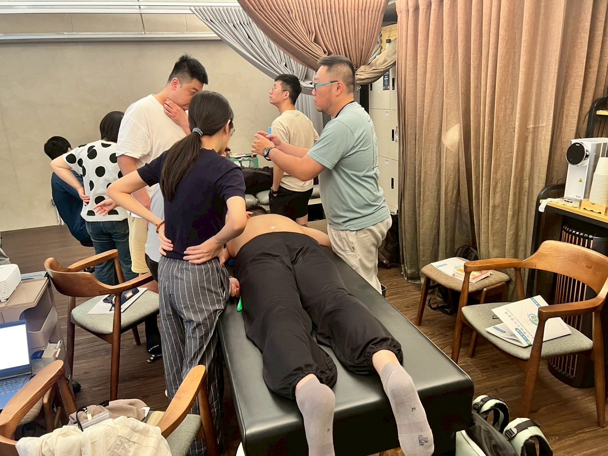
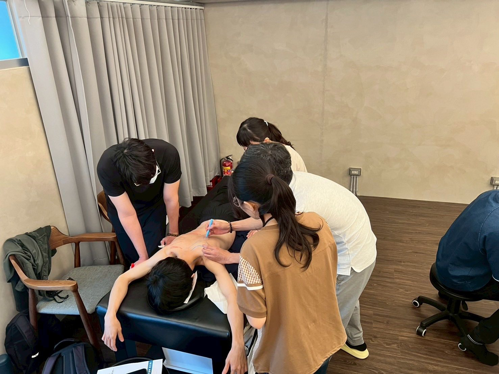
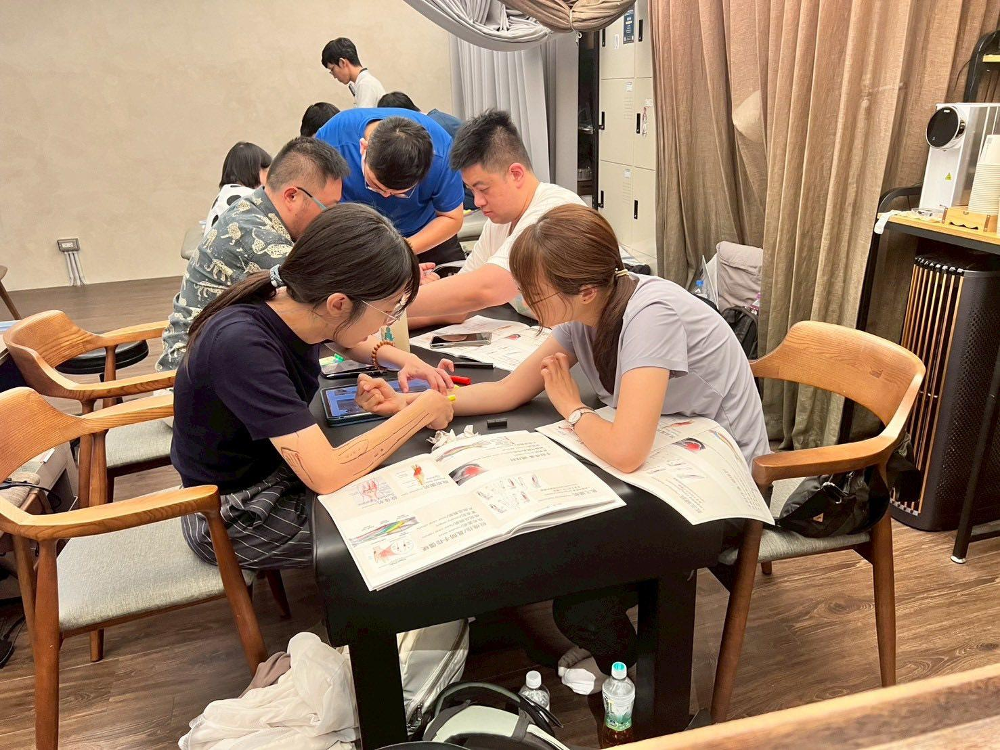
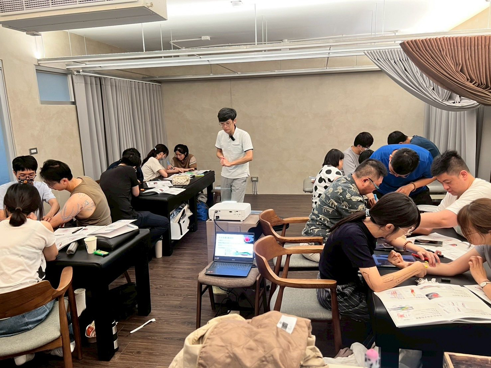
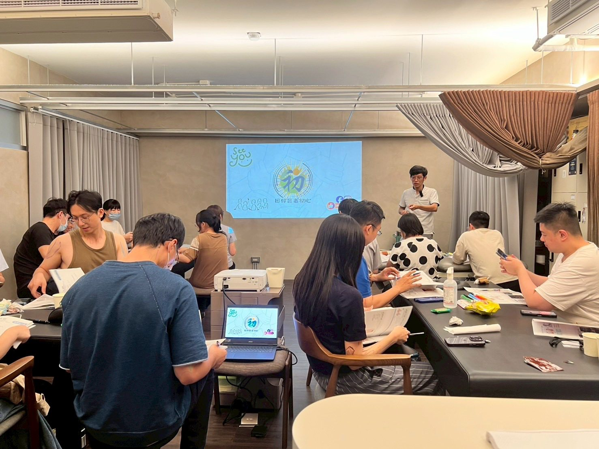
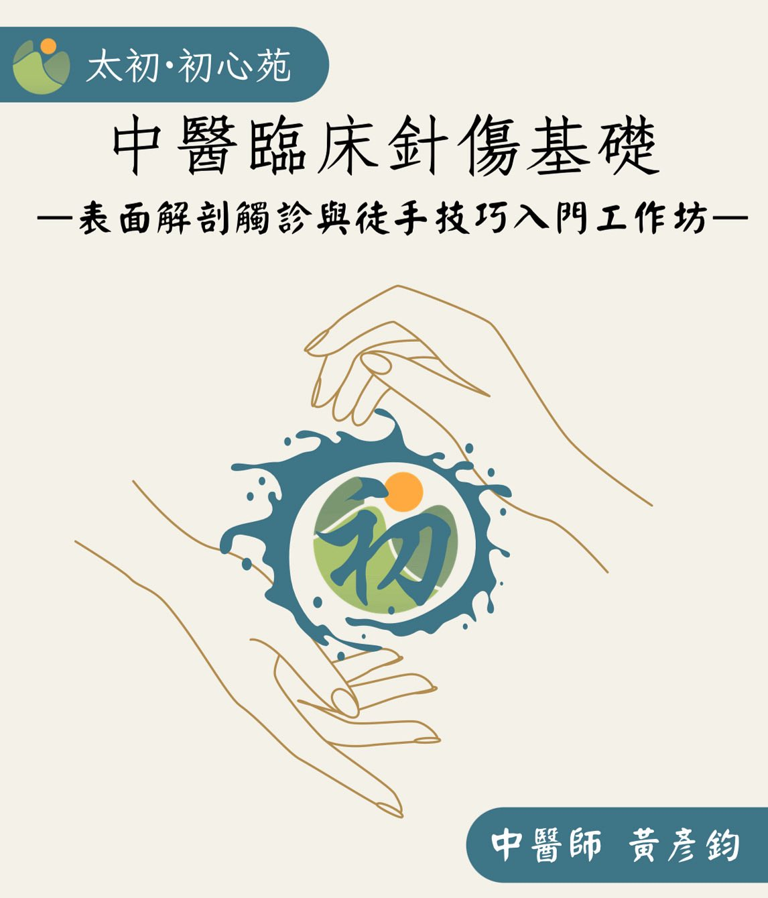
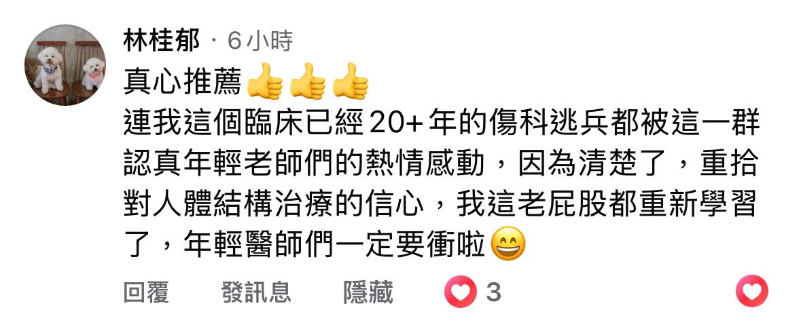
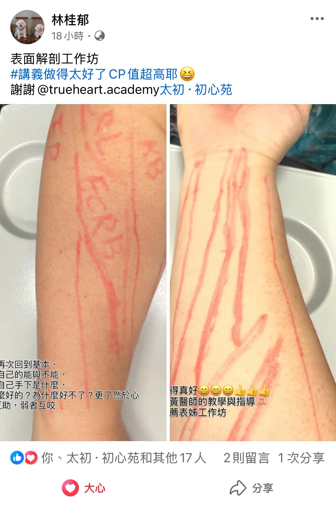
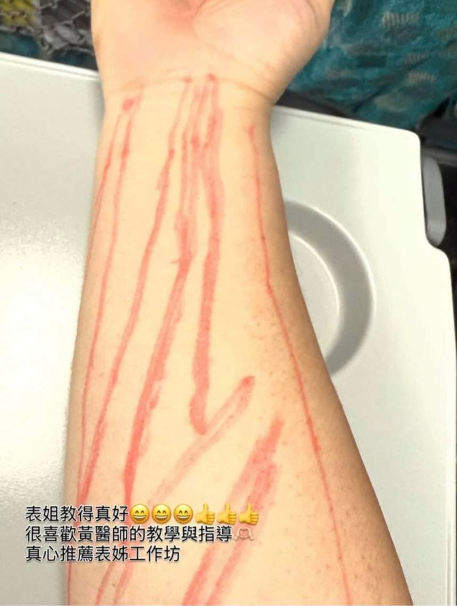
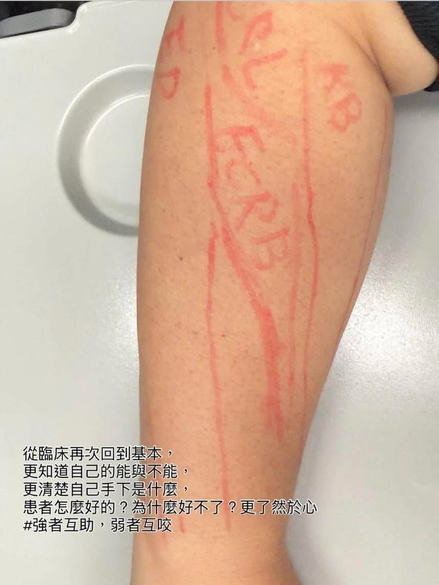